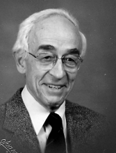

Please note: the AAS Obituaries are temporarily being hosted on this website while their full content is being ingested into the PubPub publishing platform newly adopted by the Bulletin of the American Astronomical Society. When the migration is complete, your existing links will take you to the final, migrated content. Contact peter.williams@aas.org with any questions.
Harrison Edward Radford (1927-2000)
Harrison Edward "Harry" Radford, a noted laboratory spectroscopist and pioneer in the application of magnetic resonance techniques to spectroscopy, died on 5 May 2000, after a long battle with amyotropic lateral sclerosis (ALS). During a 37-year career at the National Bureau of Standards and the Smithsonian Astrophysical Observatory, Harry measured the frequencies of numerous molecular transitions which aided the emerging field of astrochemistry.
Harry was both an excellent theoretician and a preeminently skilled experimentalist. He has several major spectroscopic achievements to his credit. He performed the first study of a short-lived molecular free radical, OH, by electron paramagnetic resonance spectroscopy, opening up a huge and important field of research. Together with colleagues he made the first observation of the rotational spectrum of CH by far infrared laser magnetic resonance spectroscopy and extended the technique to other molecules such as CH 3 O.
Harry was born in Peterborough, New Hampshire, on 26 July 1927. He was the son of Harrison Edwin Radford, a roofer, and Dorothy (née Cole) Radford. He dropped out of high school to join the Navy in 1944 as an electronics technician's mate. After his discharge in 1946 he worked in the family construction business for four years as a roofer. In 1950 he entered the University of New Hampshire and graduated four years later, Summa Cum Laude, with a degree in physics. As a graduate student at Yale from 1954 to 1959 he wrote his PhD thesis under the supervision of V.W. Hughes on the microwave Zeeman spectra of oxygen and fluorine where he used the technique of paramagnetic resonance absorption in atomic vapors. In 1954 he married Mildred Spofford. They had three daughters, Susan (born in 1955), Amy (1957), and Sarah (1960). In 1974 he married Alfa Goldthwaithe Morrison, who survived him.
From 1959 until 1969 Harry worked at the National Bureau of Standards (now the National Institute of Standards and Technology, NIST) in Washington DC. While there, he became interested in determining the long wavelength spectra and chemical properties of molecular free radicals, which can be generated in gaseous samples only in extremely low densities. He saw the potential for the application of magnetic resonance techniques to free radical spectroscopy early on. In 1965 he made the definitive measurements of the ground state lambda doublet transition frequencies of OH, which had recently been discovered in the interstellar medium. These measurements made it possible to determine the velocities of molecular clouds with high precision. For his work with the Bureau he earned the Department of Commerce's Silver Medal for Meritorious service.
In 1969 Harry moved to the Smithsonian Astrophysical Observatory (SAO) in Cambridge, Massachusetts where he remained until his retirement in 1992. He continued to do research for four more years, almost until the onset of his illness. He initially joined the group, under A.E. Lilley, that was formed to bring together laboratory spectroscopy and the fledgling field of radio astronomy of interstellar molecules. This interdisciplinary effort led to the discovery of several new molecules based on precise laboratory microwave measurements of their spectra, beginning with methanol, which helped to lay the foundation for the new science of astrochemistry.
While at SAO Harry pioneered the application of laser magnetic resonance spectroscopy to study the spectra of free radicals. His measurements of molecules such as OH, NH, CH, SO, HO 2 , HCO, NH 2 , N 2 H 4 , DO 2 , DOCO, CH 3 O, and CH 2 OH informed and guided research in astrochemistry. He also applied this technique to the study of atmospherically important molecules. In recognition for his work he received the Senior Award of the Alexander von Humboldt Foundation in 1983.
Harry spent a sabbatical year at Cambridge University in 1977, working with Douglas Russell, Brian Thrush, and Paul Davies. Additional sabbatical years were taken at the University of Bonn in 1983 (as a Humboldt Fellow) with Wolfgang Urban and at the MPI in Goettingen in 1993 with Friedrich Temps and Heinz Wagner. He was an active participant in the biennial International Symposia on Free Radicals for many years. In 1985, he was co-chair of the very successful meeting held in Colorado.
Harry's closest professional colleague and friend was Ken Evenson of the NIST Boulder Laboratories. Evenson died two years after Harry from the same form of ALS. They wrote many papers on laser magnetic resonance spectroscopy over a twenty-year period beginning in 1965. Harry often spent summers working in Boulder with Ken on various projects. They enjoyed hiking in the Colorado mountains. After his real retirement in 1996, Harry pursued various interests including German translation, computer tutoring, and art classes until the onset of ALS in 1998. Harry had an extensive interest in music. He played the Baroque recorder and participated for many years as a bass chorister at The First Church in Belmont, Unitarian, where his wife of 26 years, Alfa Radford, is the Music Minister. Harry was also a gifted craftsman and he built three harpsichords.
Harry was always a very easy and generous person to work with, a quiet, self-effacing scientist who let his work speak for him. He was fond of saying that every life leaves a residue. To his many scientific friends and colleagues, Harry's personal and professional ``residue" is his experimental elegance and scientific excellence, tempered by humanity.
Photo by Olan Mills
Obituary written by: James Moran (Harvard-Smithsonian Center for Astrophysics), Kate Kirby (Harvard-Smithsonian Center for Astrophysics), Kelly Chance (Harvard-Smithsonian Center for Astrophysics), John Brown (Harvard-Smithsonian Center for Astrophysics and Oxford University)
BAAS Citation: BAAS, 2003, 35, 1470
SAO/NASA ADS Bibcode: 2003BAAS...35.1470M